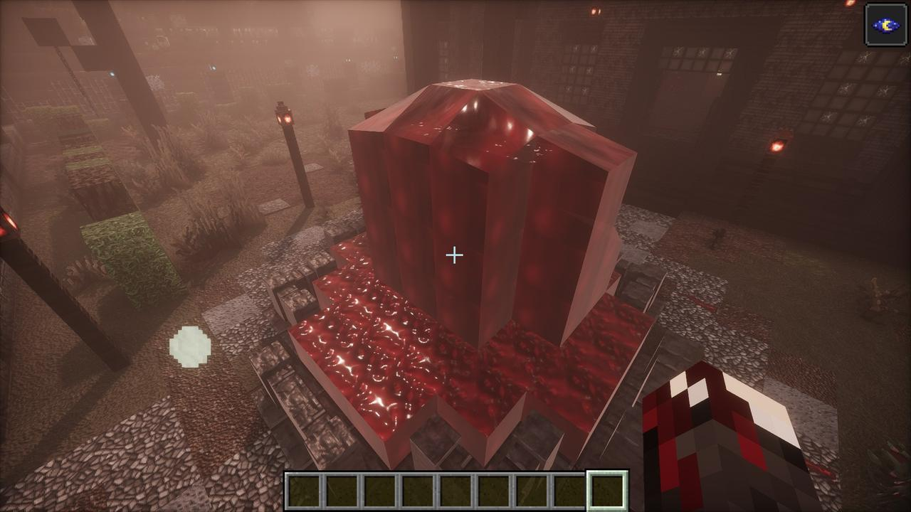
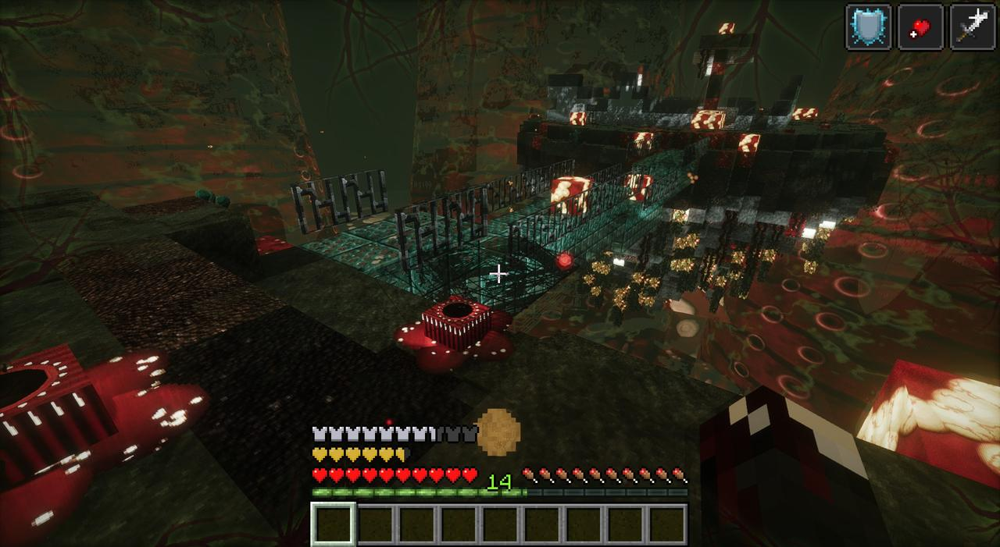

- Starts
- Ten seconds after the Great Bloom rises, east of the Botanic Gardens
- Reach
- About 1000 blocks round where it came up; 2000 once the Bloom has changed
- Ends
- Dies back once the Bloom is dead, except in the places it built itself into
- Music
- Its own, and Rosemont's, the Laboratory's and the shelter's
The waking
Ten seconds after the Great Bloom rises through the glasshouse, the ground east of the Botanic Gardens shakes and splits, and a column of raw muscle forty blocks high punches up out of it, sheds its skin, and opens a slit of teeth down its front. Veins race out from it across the ground. A title card: THE FLESH WAKES, the flower made it. The first of them get up out of the ground and come for you.

How it spreads
Outward from where it came up, further every day: a slow start, then faster. Near you it creeps from block to block.
| What was there | What it becomes |
|---|---|
| Grass and soil | Flesh turf and flesh soil: meat |
| Stone and brick | Veined stone and veined masonry, lit red from inside |
| Trees | Sinew logs and hanging tissue |
| Glass | Stretched membrane |
| Sand | Rot sand |
| Flowers | Withered black stubs |
Deeper in it grows flesh pustules (tread on one, hit it or shoot it and it bursts over you), mouths in the ground that breathe red mist and let the infected climb out, nerve stalks lit from within, and pools of the Flesh that drag at your feet. Where it touches the Bloom's flesh and the gardens' flowers, they char, and the flowers fight back, killing what of it touches them.
The red fog
Where it has taken the land, the fog goes the colour of meat and it breathes all round you, with things far off in it: screams, tearing, a heartbeat, a radio, gunfire. Every sound of it is new. With Sound Physics, the Flesh swallows sound like mud and resin do.
The infection
Their hits, their bites, a pustule bursting: the Flesh gets into you ("Something is in the wound. It's warm, and it's moving."). A vein beside your hotbar fills red with how much of you it has, and red veins creep in from the edges of your sight.
- Past halfway you're turning: hungry, slower, your heart pounding in your ears, your sight flushing red with every beat. "You're turning. Find Bloom Serum."
- At the top, your Last Breath: thirty seconds, your sight closing to a tunnel and your heart slowing. Drink a Bloom Serum, or die and get up again as one of them, with your name ("Infected Steve").
Bloom Serum (a glass bottle, a Bloom pustule and sugar; or a ghost orchid, a whispering lily and sugar) drives it back and keeps it off you for twenty seconds. Tainted meat fills you, and infects you. The Gardener's clothes keep half of it off; the full hazmat suit halves the bile, gas and spores.
What lives in it
The Flesh's infected, the things they mutate into after ten minutes on its ground, the Broodmother's nests, and on some nights a horde walking behind a Bellwether. All of them are in the bestiary. Since 1.43.3 parasites get into the infected too.
Flower Ash Bombs (a garden flower, a burnt petal and gunpowder make two) burn it back: where one bursts the Flesh's growth dies back to what it was, and anything infected in it burns.

The places it built itself into
- Rosemont, the broken city
- The Laboratory
- Shelter No. 4
- The nests (while their Broodmother lives)
- The places the Bloom and the railgun woke, and the column it came up out of
Dying back
With the Bloom dead (since 1.43.5), the Flesh has nothing to grow from. It stops spreading and dies back: wherever you go, the ground it took comes back as it was, grass, earth, stone and trees. Its vents and hordes stop with it. The places it built itself into keep it, and what's in them stays there.
it's dying. with the flower dead it's got nothing to grow from - the ground's coming back.
not in the places it built itself into, though. those it keeps.